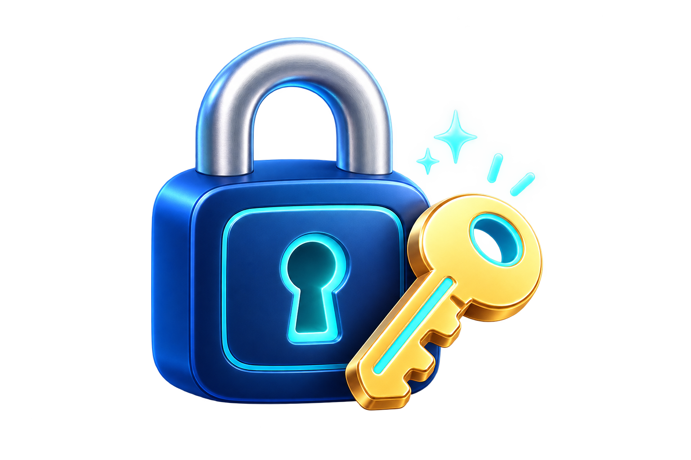

01 / WHAT IS SSH KEY AUTH?
サーバーの南京錠に、手元の鍵を合わせるイメージ。
サーバーには「この鍵の持ち主なら入ってよい」という公開鍵を置き、あなたのPCには対になる秘密鍵を残します。接続するとサーバーがペアかどうかを確認し、合っていれば扉が開きます。秘密鍵そのものをサーバーへ送ることはありません。

🔐
秘密鍵
あなた専用の鍵。
PCの中だけで大切に保管します。メール、チャット、GitHub、サーバーへは送りません。
🔑
公開鍵
サーバーに置く南京錠側の情報。.pubが付くファイルです。公開鍵だけでは、あなたの秘密鍵を作ったりログインしたりできません。
02 / WHEN IT HELPS
公開中のサイトを、安全にお手入れする入口。
Webサイトは、インターネット上の「サーバー」というコンピューターから表示されています。SSHを使うと、自分のPCからそのサーバーへ安全に入り、サイトの中身を確認したり更新したりできます。
公開中のサイトを直す
HTMLや画像を入れ替えるための、安全な作業ルートとして使えます。
困ったときに中を確認
どのフォルダーに何があるか、エラーが起きていないかを調べられます。
AIに同じ作業を頼む
接続先と「どこまでしてよいか」を決めれば、確認や更新をAIへ頼めます。
「パスワードレス」は「誰でも入れる」という意味ではありません。 パスワードの代わりに、PC内の秘密鍵で本人確認します。さくらのレンタルサーバーでは、公開鍵認証を設定してもパスワード認証自体は無効化できません。
03 / FIRST TIME SETUP
やることは、最初に一度だけ。4つを順番どおりで大丈夫。
難しい設定を全部覚える必要はありません。①PCで鍵を作る、②公開鍵だけを管理画面に貼る、③秘密鍵はPCの中に置いておく、④接続コマンドを1行入力する。このページ下のシミュレーターで、同じ順番を画面を見ながら練習できます。
初心者でも大丈夫：鍵はコマンド1行で2つ同時に作られます。サーバーへ登録するのは、名前の最後に
.pubが付いた公開鍵だけ。秘密鍵は通常、最初からWindowsの決まった場所に保存されるので、むやみに移動しなくてかまいません。ssh-keygen -t ed25519と入力してEnter。.pubの文字をコピー公開鍵の中身だけを、サーバーの管理画面に貼ります。%USERPROFILE%\.ssh\に保存されます。ssh ユーザー名@ホスト名で接続します。実際のコマンド画面と、言葉の意味を見る
Command Prompt — local PC
C:\Users\あなた> ssh-keygen -t ed25519
Generating public/private ed25519 key pair.
Enter file in which to save the key (C:\Users\あなた\.ssh\id_ed25519):
秘密鍵：C:\Users\あなた\.ssh\id_ed25519
公開鍵：C:\Users\あなた\.ssh\id_ed25519.pub
ssh-keygenSSH用の鍵ペアを作る。
-t鍵の種類を指定する。
ed25519今回使う現代的な鍵種別。
保存場所：エクスプローラーで
cmdと入力すると、そのフォルダーでコマンドプロンプトが開きます。ただし保存先を変更しなければ、鍵は現在のフォルダーではなく%USERPROFILE%\.ssh\へ作られます。04 / ZERO-TOUCH WITH AI
接続名と安全ルールを、AIへまとめて渡す。
Windows OpenSSHは%USERPROFILE%\.ssh\configを読みます。接続先を短い名前にすれば、AIは秘密鍵の中身を扱わずに接続できます。
① 一度だけconfigを用意
Host production-web HostName example.sakura.ne.jp User account-name IdentityFile ~/.ssh/id_ed25519 IdentitiesOnly yes
② AIへスキルとして渡す文
# SSHサーバー接続スキル 接続には `ssh -o BatchMode=yes production-web` を使ってください。 秘密鍵の内容を表示・コピー・送信・アップロードしないでください。 初回またはホスト鍵が変わった場合は停止し、指紋確認を私に求めてください。 接続直後は `whoami`、`hostname`、`pwd` だけを実行し、接続先を報告してください。 変更、アップロード、削除、デプロイ、再起動は、対象と影響を示して私の許可を得てから行ってください。 作業終了後は `exit` で切断し、操作内容を報告してください。
ゼロタッチとは接続時のパスワード入力を省けるという意味で、無制限の変更権限を渡す意味ではありません。初回のホスト鍵指紋は契約先の案内と照合します。秘密鍵にパスフレーズを設定した場合は、事前にssh-agentへ読み込むと繰り返し接続できます。